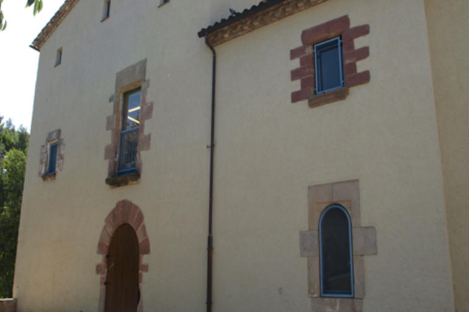

Visita · Vallirana
El molí de Can Batlle és, des del punt de vista històric i museològic, l' element patrimonial de més interès del municipi de Vallirana . Des del 1984 és propietat de l'Ajuntament, el qual va…